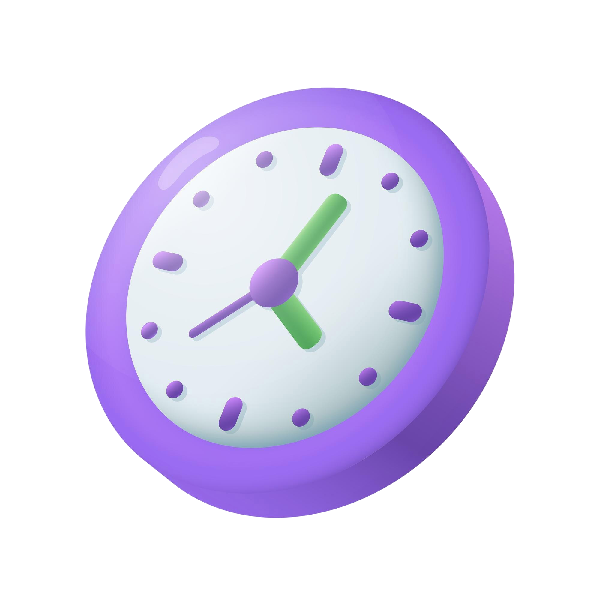
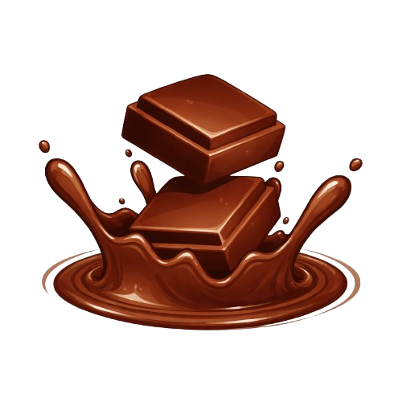
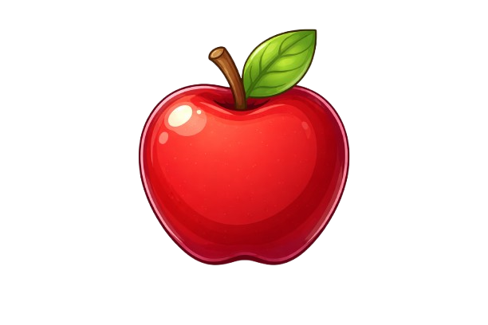
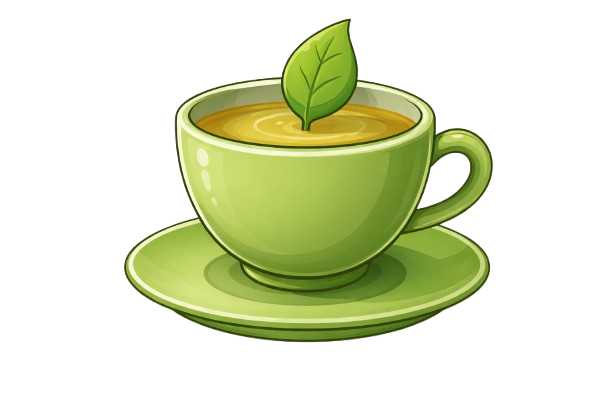

À medida que o tempo avança, cada segundo se torna decisivo, aumentando a tensão e a expectativa pelo resultado final. Além de orientar os jogadores, o relógio também reforça o ritmo acelerado das batalhas, tornando a experiência mais envolvente e estratégica.


Na cozinha do jogo, a Gota de Açúcar e os Cubos de Açúcar são distrações que surgem durante as batalhas, trazendo efeitos que podem ajudar ou atrapalhar. Com um visual doce, deixam o jogo mais dinâmico e divertido.


Na cozinha do jogo, a Maçã e o Chá Verde funcionam como buffs que fortalecem o jogador durante as batalhas. Com efeitos positivos, eles aumentam o desempenho e ajudam a enfrentar os desafios de forma mais eficiente.